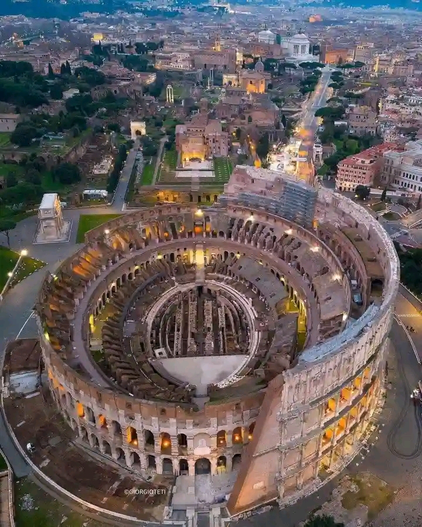

Embark on a journey through breathtaking landscapes, vibrant cultures, and hidden treasures as we unveil the top 10 destinations to visit this year. Whether you're a seasoned traveler seeking new horizons or an adventurous soul yearning for unforgettable experiences, our curated list promises to inspire wanderlust and ignite your passion for exploration. From iconic landmarks to off-the-beaten-path gems, each destination offers a unique blend of history, beauty, and adventure waiting to be discovered. Join us as we traverse the globe and uncover the wonders that await in 2024.
10 Places To Visit This Year 😎
1. Paris, France
Paris, the City of Light, continues to captivate travelers with its timeless charm and romantic allure. In 2024, immerse yourself in the rich tapestry of art, culture, and history that permeates every corner of this iconic metropolis. From the awe-inspiring Eiffel Tower to the historic Louvre Museum, Paris offers a feast for the senses at every turn. Indulge in delectable French cuisine, stroll along the picturesque Seine River, and discover hidden gems in charming neighborhoods like Montmartre. With its enchanting ambiance and world-renowned landmarks, Paris promises an unforgettable journey filled with romance, culture, and sophistication.
2. Bora Bora Island
Escape to the idyllic shores of Bora Bora Island, a true slice of paradise in the heart of the South Pacific. In 2024, indulge in the ultimate tropical getaway surrounded by crystal-clear turquoise waters, pristine white-sand beaches, and lush greenery. Whether you're lounging in overwater bungalows, snorkeling among vibrant coral reefs, or exploring the island's natural wonders, Bora Bora offers an unparalleled retreat for relaxation and adventure. Discover the magic of this enchanting destination, where every moment is infused with tranquility and beauty.
3. Lagos, Nigeria
Welcome to Lagos, the pulsating heart of Nigeria and a dynamic hub of culture, creativity, and energy. In 2024, experience the electrifying atmosphere of this bustling metropolis, where tradition meets modernity in a captivating fusion. From the vibrant markets of Balogun to the stunning beaches of Lekki, Lagos offers a kaleidoscope of experiences for the adventurous traveler. Delve into the city's rich history at the National Museum, savor the flavors of Nigerian cuisine at local eateries, and immerse yourself in the infectious rhythm of Afrobeat music. With its lively spirit and warm hospitality, Lagos beckons visitors to explore its vibrant streets and discover the essence of Nigerian culture.
4. New York City
In 2024, New York City beckons with its vibrant energy and endless possibilities. From the iconic skyline punctuated by towering skyscrapers to the bustling streets alive with diversity, this metropolis offers an unparalleled urban experience. Explore world-class museums like the Metropolitan Museum of Art and the Museum of Modern Art, stroll through Central Park's tranquil oasis in the heart of the city, and take in breathtaking views from the top of the Empire State Building. Delight in culinary delights from around the globe, catch a Broadway show, and immerse yourself in the city's pulsating nightlife. With its dynamic blend of culture, art, and innovation, New York City promises an exhilarating adventure for every traveler in 2024.
5. Berlin, Germany
In 2024, Berlin stands as a vibrant symbol of resilience, innovation, and cultural diversity. This dynamic city seamlessly blends its storied past with a thriving modern landscape, offering visitors a captivating blend of old-world charm and contemporary allure. Explore iconic landmarks such as the historic Brandenburg Gate and the remnants of the Berlin Wall, which serve as poignant reminders of the city's tumultuous history. Delve into Berlin's eclectic arts scene, vibrant nightlife, and culinary delights, all set against the backdrop of its bustling streets and picturesque parks. With its progressive spirit and rich cultural heritage, Berlin invites travelers to embark on a journey of exploration and discovery unlike any other.
6. London, United Kingdom
In 2024, London beckons travelers with its dynamic blend of history, culture, and contemporary flair. From the iconic Big Ben to the majestic Tower of London, the city's skyline is adorned with centuries of architectural marvels. Explore world-class museums like the British Museum and Tate Modern, or embark on a leisurely stroll through Hyde Park's lush greenery. Immerse yourself in the vibrant culinary scene, from traditional pubs serving hearty fare to Michelin-starred restaurants pushing culinary boundaries. With its bustling markets, eclectic neighborhoods, and rich cultural tapestry, London promises an unforgettable experience that seamlessly marries the past with the present.
7. Hawaii, United States
Escape to the idyllic paradise of Hawaii in 2024, where lush landscapes, crystal-clear waters, and warm hospitality await. This enchanting archipelago offers a haven for relaxation and adventure seekers alike. Explore volcanic landscapes at Hawaii Volcanoes National Park, bask in the sun on pristine beaches like Waikiki, and snorkel amidst vibrant coral reefs teeming with marine life. Immerse yourself in the rich Polynesian culture through traditional luaus, hula performances, and local cuisine bursting with tropical flavors. Whether you seek serenity or exhilaration, Hawaii beckons with its natural beauty and aloha spirit, promising an unforgettable escape to paradise.

8. Rome, Italy
In 2024, lose yourself in the timeless allure of Rome, where ancient history meets modern charm. As the Eternal City, Rome boasts iconic landmarks such as the Colosseum, the Roman Forum, and the Vatican City, each offering a glimpse into the city's illustrious past. Wander through cobblestone streets lined with majestic ruins, indulge in mouthwatering Italian cuisine, and marvel at masterpieces of art and architecture around every corner. Whether you're exploring the Vatican Museums or tossing a coin into the Trevi Fountain, Rome promises an enchanting blend of history, culture, and culinary delights that will leave you spellbound.
9. Maldives
Escape to a tropical paradise in the Maldives, where crystal-clear waters meet pristine white sands. In 2024, discover the epitome of luxury and relaxation in this breathtaking archipelago. With its overwater bungalows, vibrant coral reefs, and unrivaled natural beauty, the Maldives offers a sanctuary for travelers seeking serenity and tranquility. Dive into the vibrant underwater world, indulge in world-class spa treatments, or simply unwind on secluded beaches surrounded by turquoise lagoons. Whether you're a honeymooner, adventure seeker, or beach lover, the Maldives promises an idyllic getaway like no other, making it a must-visit destination in 2024.
10. Tokyo, Japan
In 2024, Tokyo beckons travelers with its unique blend of ancient tradition and cutting-edge technology. Explore the vibrant streets of this dynamic city, where centuries-old temples stand in harmony with futuristic skyscrapers. Dive into the bustling energy of districts like Shibuya and Shinjuku, where neon lights and bustling crowds create an electrifying atmosphere. Delve into Tokyo's culinary scene, from savory street food to Michelin-starred restaurants offering exquisite Japanese cuisine. Experience the tranquility of traditional tea ceremonies and the excitement of vibrant pop culture phenomena like anime and manga. With its juxtaposition of old and new, Tokyo offers an immersive and unforgettable adventure for travelers seeking to explore the pulse of modern Japan.